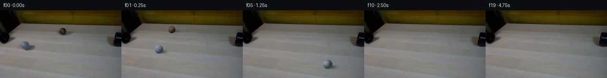

![首帧]()

Round 00
2026-11-05T19:05:01.899310+00:00像素候选变化代码 +201/−0inspection 更新
pixels cedcdef2c6c1c1c9 · code 64e28fd7759022ba
查看本轮 generate.py 真实 diff
--- previous/generate.py
+++ current/generate.py
@@ -0,0 +1,201 @@
+"""Deterministic photograph-based pixel continuation; no external inputs or models."""
+from pathlib import Path
+import json
+import numpy as np
+from PIL import Image, ImageDraw
+from scipy import ndimage
+from scipy.sparse import lil_matrix
+from scipy.sparse.linalg import spsolve
+from artifact_io import save
+
+ROOT = Path(__file__).resolve().parent
+W, H, SS = 256, 144, 3
+SOURCE = np.asarray(Image.open(ROOT / 'first_frame.png').convert('RGB'))
+PHOTO = SOURCE.astype(np.float64)
+Y, X = np.indices((H, W), dtype=np.float64)
+LIGHT = np.array([-.58, .62, .53]); LIGHT /= np.linalg.norm(LIGHT)
+BALLS = {
+ 'grey': dict(center=(53.5, 74.5), radius=(8.7, 8.8), velocity=(100., 31.7),
+ material=(116., 130., 151.), axis=(-.27, .57, -.78),
+ patch_shift=(48., 5.2), shadow=(7.5, 5.3, 12., 4.7, .44)),
+ 'brown': dict(center=(132., 44.5), radius=(7.5, 7.8), velocity=(-105., -15.9),
+ material=(78., 52., 42.), axis=(.15, -.56, .815),
+ patch_shift=(-42., -1.1), shadow=(8., 3.8, 12., 3.5, .29)),
+}
+
+def ellipse(cx, cy, rx, ry):
+ return ((X-cx)/rx)**2 + ((Y-cy)/ry)**2 <= 1
+
+MASKS = {
+ 'grey': ellipse(59., 76.8, 21.5, 12.7),
+ 'brown': ellipse(135., 46., 22.3, 11.3),
+}
+
+
+def seamless_patch(photo, mask, dx, dy):
+ """Translate same-photo wood grain, solve harmonic boundary color correction."""
+ donor = np.stack([ndimage.map_coordinates(photo[:, :, c], [Y+dy, X+dx],
+ order=1, mode='nearest') for c in range(3)], axis=-1)
+ coords = np.argwhere(mask)
+ ids = np.full((H, W), -1, dtype=int)
+ ids[mask] = np.arange(len(coords))
+ a = lil_matrix((len(coords), len(coords)), dtype=np.float64)
+ rhs = np.zeros((len(coords), 3))
+ diff = photo - donor
+ for i, (y, x) in enumerate(coords):
+ a[i, i] = 4
+ for oy, ox in ((-1,0), (1,0), (0,-1), (0,1)):
+ yy, xx = y+oy, x+ox
+ if mask[yy, xx]:
+ a[i, ids[yy,xx]] = -1
+ else:
+ rhs[i] += diff[yy,xx]
+ correction = spsolve(a.tocsr(), rhs)
+ result = photo.copy()
+ result[mask] = np.clip(donor[mask]+correction, 0, 255)
+ return result
+
+CLEAN = PHOTO.copy()
+for name, spec in BALLS.items():
+ CLEAN = seamless_patch(CLEAN, MASKS[name], *spec['patch_shift'])
+CLEAN_U8 = np.rint(CLEAN).clip(0,255).astype(np.uint8)
+CLEAN = CLEAN_U8.astype(np.float64)
+
+# Original dark left apparatus is a fixed foreground occluder, derived from input.
+OCCLUSION = (X < 43) & (Y < 73) & (PHOTO.mean(2) < 62)
+OCCLUSION_HI = np.repeat(np.repeat(OCCLUSION, SS, 0), SS, 1)
+
+
+def illumination(nx, ny, nz):
+ return .40 + .60 * np.clip(nx*LIGHT[0]+ny*LIGHT[1]+nz*LIGHT[2], 0, 1)
+
+
+def rotate_normals(nx, ny, nz, axis, angle):
+ axis = np.asarray(axis, dtype=float); axis /= np.linalg.norm(axis)
+ n = np.stack((nx,ny,nz), -1)
+ co, si = np.cos(angle), np.sin(angle)
+ return n*co + np.cross(axis, n)*si + np.sum(n*axis, -1)[...,None]*axis*(1-co)
+
+
+def surface_material(name, normals):
+ """Use the photographed visible hemisphere as a periodically mirrored texture."""
+ spec = BALLS[name]
+ qx, qy = normals[...,0], normals[...,1]
+ # Fold the hemisphere at its equator to extend the original visible surface.
+ # Suppress photograph/background mixing at the source silhouette.
+ radial = np.sqrt(qx*qx+qy*qy)
+ shrink = np.minimum(1, .91/np.maximum(radial, 1e-8))
… diff truncated; 114 more lines …